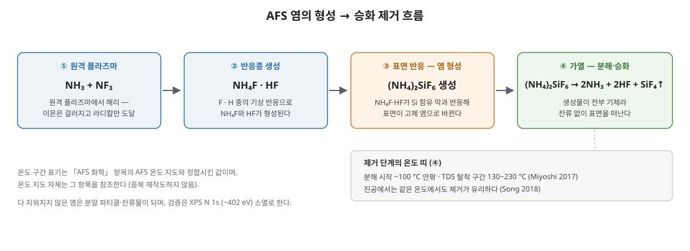

만들어진 (NH₄)₂SiF₆ 염을 남김없이 지우는 일 — 제거 경로 3가지와, 다 지워지지 않았을 때 생기는 잔류물·파티클 문제.
제거는 공정 창의 절반이다
AFS 선택 식각은 표면을 염으로 바꿨다가 날려 보내는 화학이다. 그런데 "날려 보내는" 쪽이 불완전하면 염은 그대로 결함이 된다 — 웨이퍼 위에 남은 염 분말, 식각을 방해하는 잔류물, 챔버 벽에 다시 생기는 재증착. 염을 쓰는 공정에서는 만드는 조건만큼 지우는 조건이 공정 창을 결정한다. 이 항목은 제거 경로와 잔류물의 문헌을 모은다.

제거 경로 1 — 열분해·승화
기본 경로는 가열이다. (NH₄)₂SiF₆는 가열하면 (NH₄)₂SiF₆ → 2NH₃ + 2HF + SiF₄로 분해되어 생성물이 전부 기체로 떠난다. 분해가 시작되는 온도는 100°C 안팎이다.
- TDS가 보여주는 것 — Miyoshi(2017)는 승온 탈착 분광으로 탈착이 130~230°C 구간에서 일어남을, 탈착 활성화 에너지가 종에 따라 0.71~0.96 eV임을 쟀다. 어닐 온도를 정하는 근거가 되는 숫자다.
- 승온 속도가 병목 — 제거 단계의 시간은 대개 탈착이 잡아먹는다. Miyoshi(2017)는 IR 램프 어닐로 150°C까지 10초 안에 승온해 탈착 시간을 크게 줄였다 — 사이클 처리량은 형성보다 제거에서 정해지는 경우가 많다.
- 진공 중 승화 — Song 등(2018)은 Si 위에 만든 (NH₄)₂SiF₆ 박막이 진공 챔버에서 100°C 이상 어닐로 승화 제거됨을 보였다. 압력이 낮을수록 분해 산물이 표면에서 빨리 빠져나가므로, 같은 온도라도 진공 조건이 제거에 유리하다.
제거 경로 2 — 수세 용해
(NH₄)₂SiF₆는 물에 녹는다. 그래서 열로 다 날리지 못한 염은 DIW 세정으로 씻어내는 경로가 있다.
Kwon과 Park(2022)은 HF VPD(기상 식각)를 거친 Si₃N₄ 웨이퍼의 (NH₄)₂SiF₆ 분말을 대상으로 완전 제거 조건을 정량했다 — 진공 오븐에서 170°C·120초·120 Torr 가열한 뒤, 25°C DIW로 30초 세정하면 분말이 완전히 사라진다. 가열만으로, 또는 세정만으로는 부족하고 두 단계를 조합한 조건이라는 점이 포인트다. 용매는 IPA 등 다른 후보와 비교 평가한 끝에 DIW가 선택됐다.
제거 경로 3 — 화학으로 되돌리기
- 수분의 도움 — Lill 등(2024)의 DFT 계산은 H₂O가 AFS의 결합을 약화시킴을 보였다(결합 에너지 0.47 → 0.35 eV, 계산값). 제거 단계에 수분을 쓰는 설계가 분해 온도를 낮출 여지를 주는 근거다.
- 재노출·재형성 사이클 — 제거가 덜 된 표면을 다시 약한 형성 조건에 노출했다가 탈착시키는 반복은, 잔류 염을 조금씩 걷어내는 방식으로 쓸 수 있다. 다만 사이클마다 모재도 조금씩 깎이므로 마진 계산이 필요하다.
경로 비교와 배치 — 어디서 지우나
| 경로 | 구동력 | 강점 | 약점 |
|---|---|---|---|
| 열분해·승화 | 온도 (100~230 °C) | 잔류 없이 전부 기체로, 사이클 안에 넣기 쉬움 | 탈착 시간이 처리량 병목, 열 예산 소모 |
| 수세 용해 | DIW 용해 | 열로 안 지워진 분말까지 확실히 제거 (Kwon & Park 2022) | 습식 단계 추가, 건조·워터마크 관리 |
| 화학 보조 | H₂O 등에 의한 결합 약화 | 분해 온도를 낮출 여지 (DFT 근거) | 조건 창이 좁고 설계 근거가 아직 계산 수준 |
배치 방식도 갈린다. 형성한 그 챔버에서 그대로 가열해 날리는 in-situ 제거는 사이클 구조와 궁합이 좋고 이송 오염이 없지만, 챔버가 탈착 시간만큼 묶인다. 반대로 Kwon과 Park(2022)의 진공 오븐 + DIW처럼 ex-situ 제거로 빼면 식각 챔버 처리량은 지키면서 더 강한 조건(고온 장시간 + 수세)을 쓸 수 있는 대신, 염이 남은 채로 웨이퍼를 옮기는 구간의 파티클·재증착 관리가 새로 생긴다. 실제 공정 설계는 대개 in-situ 탈착을 기본으로 두고, 잔류가 쌓이는 조건에서 ex-situ 완전 제거를 백업으로 얹는 형태가 된다.
잔류물 문제 — 무엇이 남고 무엇을 막나
분말 파티클 (Kwon & Park 2022). HF VPD를 거친 Si₃N₄ 웨이퍼 표면에는 지름 약 10 µm의 (NH₄)₂SiF₆ 분말이 생긴다. 밀도는 Si₃N₄ 두께가 30 nm에서 70 nm로 두꺼워지는 구간에서 317 → 2101개/mm²로 늘었다 — 깎인 양(생성된 염의 양)이 많을수록 남는 분말도 많다는 뜻이다.
반응 잔류물 (Kim 2017). Kim 등(2017)은 NF₃/H₂O 화학으로 폴리실라잔(PSZ)을 건식 식각할 때 생기는 ammonium silicate 잔류물을 특성화했다. 이 잔류물은 표면에 남아 뒤이은 식각 반응 자체를 방해한다 — 식각이 중간에 느려지거나 멈추는 양상으로 나타나며, 잔류물의 양은 공정 파라미터에 따라 달라져 관리 대상이 된다.
그 밖에 남는 문제들.
- 후속 공정 오염 — 남은 염은 후속 증착의 계면 오염·접착 불량이 되고, 가열 공정에서 늦게 분해되며 HF·NH₃를 방출해 주변 막을 공격할 수 있다.
- 재증착 — 분해 산물인 NH₃·HF가 차가운 벽이나 배기 라인에서 다시 만나면 그 자리에 염이 다시 생긴다. 파티클과 챔버 메모리 효과의 공급원이 된다.
- 고종횡비 구조의 잔류 — 트렌치·홀 안쪽은 탈착 산물의 확산이 느려 같은 조건에서도 바깥 평면보다 염이 남기 쉽다.
제거 조건 설계·트러블슈팅
| 증상 | 의심 원인 | 대응 방향 |
|---|---|---|
| 웨이퍼 표면 분말 파티클 | 탈착 온도·시간 부족, 생성 염 과다 | 어닐 온도·시간 상향 (IR 급속 승온), Kwon & Park 조건(진공 오븐 170 °C·120 s·120 Torr + DIW 25 °C·30 s) 같은 열+수세 조합 |
| 식각 도중 속도 저하·정지 | 잔류물이 표면을 덮어 반응 차단 (Kim 2017형) | 수분·온도 조건 조정으로 잔류물 생성 자체를 억제, 중간 탈착 단계 삽입 |
| 챔버 벽·배기 쪽 재증착 | 분해 산물의 재결합, 냉점 존재 | 벽 온도·배기 컨덕턴스 관리, 주기적 챔버 클리닝 |
| 패턴 안쪽만 염 잔류 | 고종횡비에서의 확산 제한 | 탈착 시간 연장, 압력을 낮춰 확산 유리하게 |
| 후속 막의 계면 결함 | 제거 불완전 후 증착 진행 | 증착 전 표면 확인(XPS N 1s 402 eV 소멸 여부)과 제거 조건 재검증 |
제거 검증의 1차 도구는 AFS 화학에서 다룬 XPS 지문이다 — 어닐 후 N 1s의 약 402 eV 피크가 사라졌는지가 "다 지워졌는가"를 판정한다.
근거
- TDS 탈착 구간·활성화 에너지·IR 어닐 — 실측: Miyoshi et al. (2017). DOI: 10.7567/JJAP.56.06HB01. 진공 중 승화 — Song et al., Jpn. J. Appl. Phys. 57, 106505 (2018). DOI: 10.7567/JJAP.57.106505.
- 완전 제거 조건·분말 밀도 317→2101개/mm² — 실측: Kwon & Park (2022), J. Korean Phys. Soc. 81, 903. DOI: 10.1007/s40042-022-00625-5 (원문 대조 확인).
- ammonium silicate 잔류물 특성화 — 실측: Kim (2017), ECS Trans. 80(2), 211. DOI: 10.1149/08002.0211ecst.
- 결합 에너지 저하 0.47 → 0.35 eV — DFT 계산값(실측 아님): Lill et al. (2024). DOI: 10.1116/6.0004019.